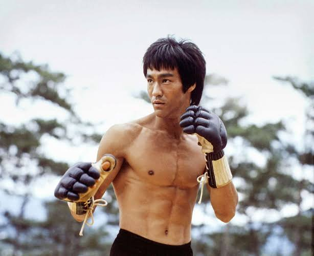
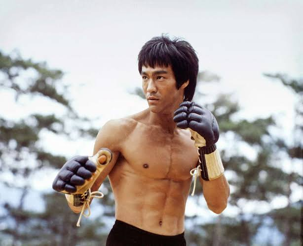

Bruce Lee
 

"It was impossible to get bored with him around!"
Bruce Lee (Chinese: 李小龍; born Lee Jun-fan, 李振藩; November 27, 1940 – July 20, 1973) was a Hong Kong-American martial artist and actor. He was the founder of Jeet Kune Do, a hybrid martial arts philosophy drawing from different combat disciplines that is sometimes credited with paving the way for the combat sport mixed martial arts (MMA).[3] Lee is considered by some commentators and martial artists to be the most influential martial artist of all time and a pop culture icon of the 20th century, who bridged the gap between East and West. He is credited with promoting Hong Kong action cinema and helping to change the way Chinese people were presented in American films.[4]
Born in San Francisco and raised in Hong Kong, Lee was introduced to the Hong Kong film industry as a child actor by his father.[5] His early martial arts experience included Wing Chun (trained under Ip Man), tai chi, boxing (winning a Hong Kong boxing tournament), and frequent street fighting (neighborhood and rooftop fights). In 1959, Lee moved to Seattle. In 1961, he enrolled at the University of Washington.[6] It was during this time in the United States that he began considering making money by teaching martial arts, even though he aspired to have a career in acting. He opened his first martial arts school, operated out of home in Seattle. After later adding a second school in Oakland, California, he once drew significant attention at the 1964 Long Beach International Karate Championships of California by making demonstrations and speaking. He subsequently moved to Los Angeles to teach, where his students included Chuck Norris, Sharon Tate, and Kareem Abdul-Jabbar. In the 1970s, his Hong Kong and Hollywood-produced films elevated Hong Kong martial arts films to a new level of popularity and acclaim, sparking a surge of Western interest in Chinese martial arts. The direction and tone of his films dramatically influenced and changed martial arts and martial arts films worldwide.[7]
With a career spanning Hong Kong and the United States,[8][9][10] he is known for his roles in five feature-length Hong Kong martial arts films in the early 1970s: Lo Wei's The Big Boss (1971) and Fist of Fury (1972); Golden Harvest's The Way of the Dragon (1972), directed and written by Lee; and Golden Harvest and Warner Brothers' Enter the Dragon (1973) and The Game of Death (1978), both directed by Robert Clouse.[11] Lee became an iconic figure known throughout the world, particularly among the Chinese, based upon his portrayal of Cantonese culture in his films,[12] and among Asian Americans for defying Asian stereotypes in the United States.[13] Having initially learned Wing Chun, tai chi, boxing, and street fighting, he combined them with other influences from various sources into the spirit of his personal martial arts philosophy, which he dubbed Jeet Kune Do (The Way of the Intercepting Fist).[14]
Lee died in July 1973, aged 32. Since his death, Lee has continued to be a prominent influence on modern combat sports, including judo, karate, mixed martial arts, and boxing, as well as modern popular culture, including film, television, comics, animation, and video games. Time named Lee one of the 100 most important people of the 20th century.
<< Back to index